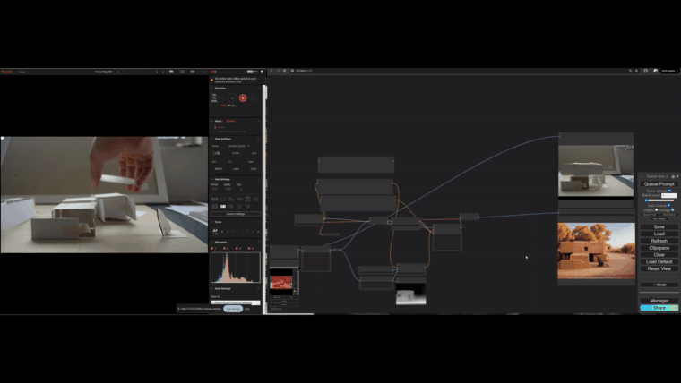
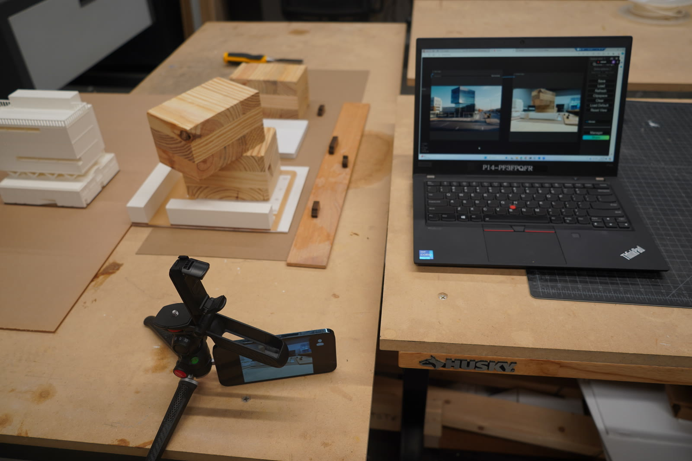
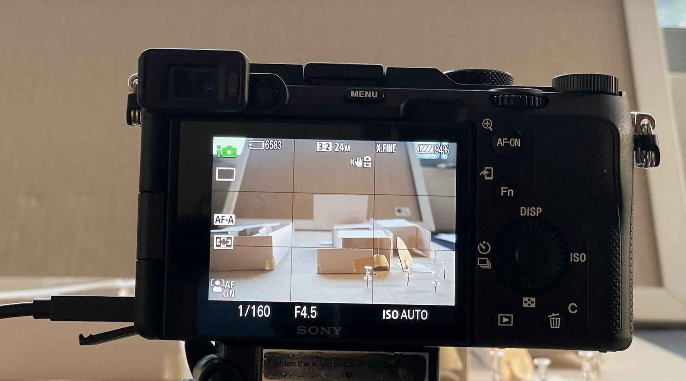
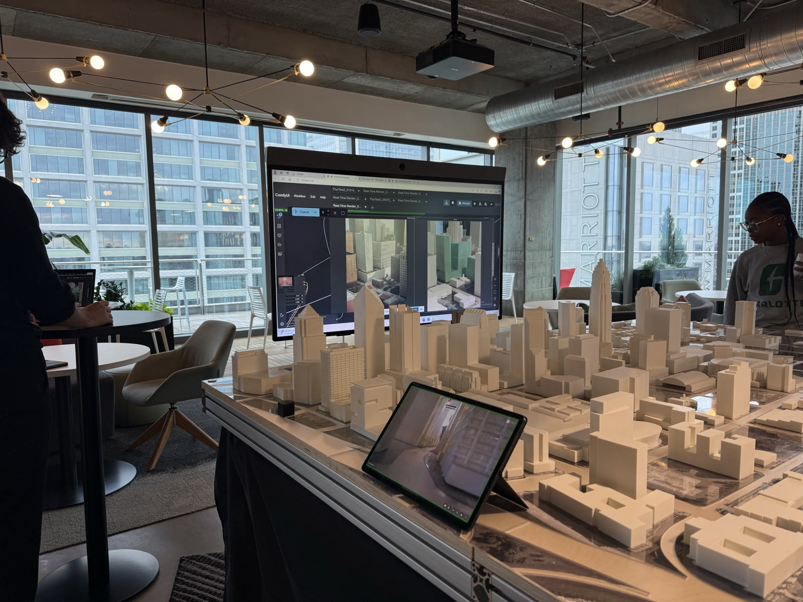
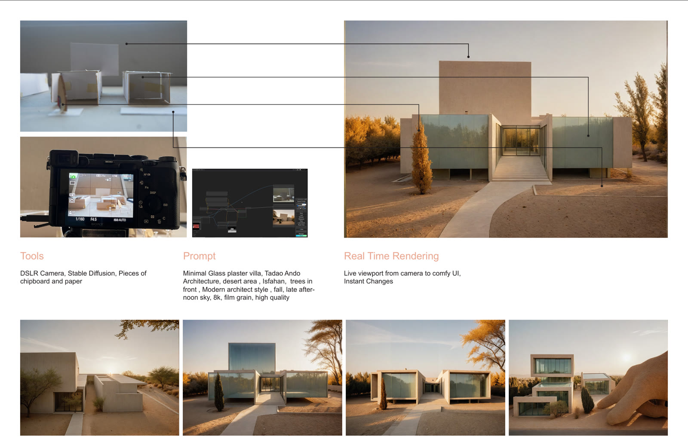

Point a camera at a rough physical model—chipboard, foam, a few wood offcuts—and watch it become a finished, photoreal render in real time. Move a piece and the render moves with it. This was an experiment in collapsing the distance between a massing study you can touch and the image you'd normally wait hours to produce.
A live camera feed runs into a Stable Diffusion pipeline in ComfyUI, which reinterprets every frame against a prompt—material, context, light, lens—many times a second. The whole thing ran entirely on local office servers: the pipeline was served on the network at the workstation's IP address, and a short set of commands let internal staff connect—to drive it directly or to send their own live camera data in for processing.
It was built for big presentations. With the model on the table and the render on the room's main screen, clients could rearrange the massing with their own hands and generate their own renderings, live, in front of everyone.
City massing model running through the live diffusion pipeline — two simultaneous angles, redrawing in real time as the model is adjusted.

LiveLeft: the live camera feed of the physical model, with a hand rearranging the blocks. Right: the diffusion output redrawing in step—every nudge to the model becomes a new photoreal frame, instantly.

The whole setup is deliberately cheap: white plaster and chipboard massing, a few wood offcuts, a camera on a small tripod, and a laptop running the pipeline. No special model—just whatever reads as volume to the camera.

Through the viewfinder it's just rough blocks and folded paper. That raw frame is the only geometry the system needs—the prompt supplies the material, the trees, the time of day.

Scaled up for client work: a large city massing model on the table and the live render filling the room's main screen. Clients could lean in, move a tower, and watch the skyline re-render in front of them.

A study version of the same idea: a small paper-and-chipboard villa, a single prompt, and the run of photoreal variations it produced—each one following the physical model as it was reshaped.
At its core it's a real-time image-to-image loop. A camera points at the physical massing and streams its feed into ComfyUI running Stable Diffusion. Each frame is reinterpreted against a fixed prompt—material, context, time of day, lens—so a crude white block reads as a glass villa or a city tower, refreshed many times a second.
Because it reads a live feed rather than a saved file, the loop never stops: nudge a building, rotate the camera, or drop in a new piece, and the render follows immediately. There's no re-export and no render queue—the image just keeps up with the model.
It ran entirely on local office hardware. The pipeline was served from a workstation and exposed on the internal network at its IP address; a short set of commands let any office user connect—either to operate it directly or to push their own live camera data to it for processing—which made it easy to carry into any meeting room without touching the cloud.